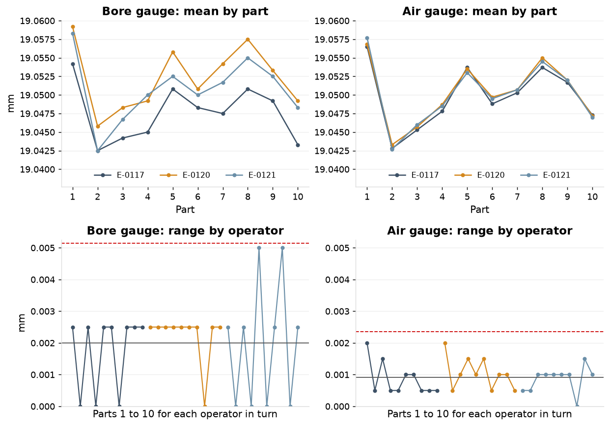
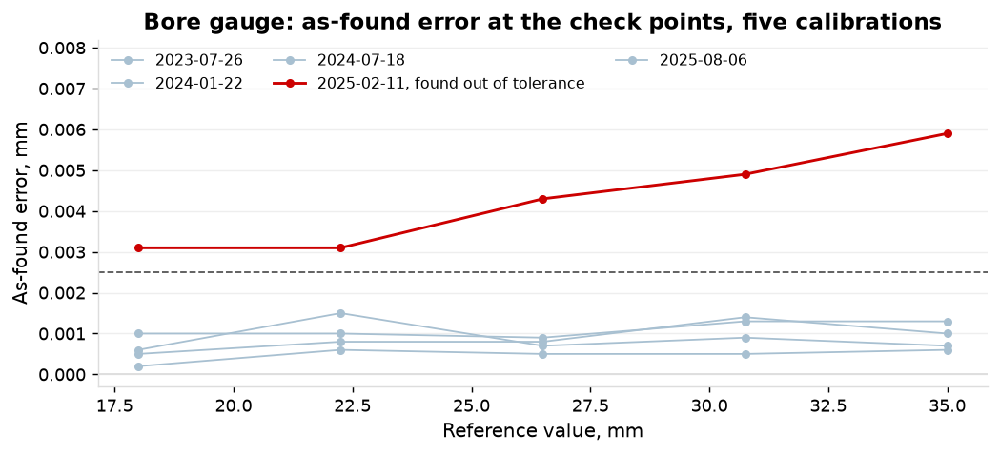
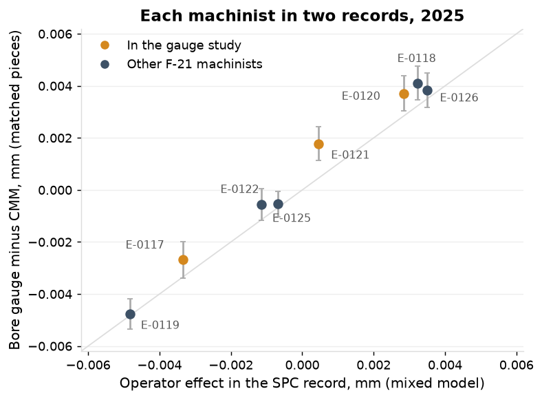
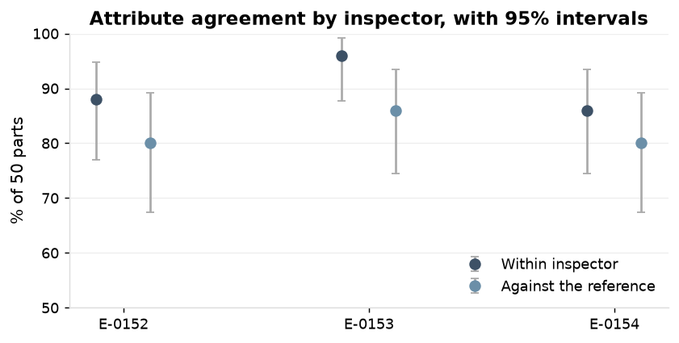

Precision machining shop, about 150 employees, IATF 16949 and AS9100, one plant. January 2024 to December 2025; lengths in mm. Sources: gauge study and attribute study worksheets, SPC module, CMM software, calibration system. PPAP element 7, measurement system analysis studies; AS9102 supporting data.
1. The bore gauge
The two-point bore gauge consumes 34.0% of the 0.050 mm tolerance on the F-21 critical bore, with 2 distinct categories. Reproducibility is the larger component at 29.9% of tolerance against 16.1% for repeatability; the operator term alone is 28.8%.
Source
VarComp
%Contribution (of VarComp)
StdDev (SD)
Study Var (6 x SD)
%Study Var (%SV)
%Tolerance (SV/Toler)
StdDev 95% interval
Total Gage R&R
0.000008009
32.66
0.002830
0.016980
57.15
33.96
0.0017 to 0.0086
Repeatability
0.000001806
7.36
0.001344
0.008062
27.13
16.12
0.0011 to 0.0016
Reproducibility
0.000006204
25.30
0.002491
0.014944
50.30
29.89
Operator
0.000005743
23.42
0.002397
0.014379
48.39
28.76
0.0012 to 0.0160
Operator*Part
0.000000460
1.88
0.000679
0.004071
13.70
8.14
0.0004 to 0.0025
Part-To-Part
0.000016515
67.34
0.004064
0.024383
82.06
48.77
0.0028 to 0.0075
Total Variation
0.000024524
100.00
0.004952
0.029713
100.00
59.43
Table 1. Bore gauge G-0008, gauge R&R variance components: 3 operators, 10 parts, 3 trials, 90 readings, study GRR-2025-011 of 2025-11-12. Number of distinct categories = 2.
The study on file from 2022 gave 19.4% by the average and range method. The same method on this worksheet gives 32.9%. The method accounts for 1.1 points of the move from 19.4% to 34%.
Method
GRR, % of tolerance
ndc
Study on file, GRR-2022-031 of 2022-11-08
average and range
19.4
not stated
Bore gauge, this study
ANOVA
34.0
2
Bore gauge, this study
average and range
32.9
2
Air gauge, this study
ANOVA
7.2
10
Table 2. The gauge R&R on file and the two gauges in this study, on the same tolerance.

Figure 1. Mean reading by part for each operator (top) and range of the three trials by operator with its mean and upper limit (bottom); bore gauge left, air gauge right, same ten parts.
2. The air gauge on the same parts
On the same ten parts with the same three operators the air gauge consumes 7.2% of tolerance, with 10 distinct categories. Its operator term is 2.6% of tolerance. The two studies give the same part-to-part sd, 0.0041 and 0.0043 mm.
Source
VarComp
%Contribution (of VarComp)
StdDev (SD)
Study Var (6 x SD)
%Study Var (%SV)
%Tolerance (SV/Toler)
StdDev 95% interval
Total Gage R&R
0.000000357
1.93
0.000597
0.003582
13.89
7.16
0.0005 to 0.0007
Repeatability
0.000000311
1.68
0.000558
0.003346
12.97
6.69
0.0005 to 0.0007
Reproducibility
0.000000045
0.25
0.000213
0.001279
4.96
2.56
Operator
0.000000045
0.25
0.000213
0.001279
4.96
2.56
0.0001 to 0.0030
Operator*Part
0.000000000
0.00
0.000000
0.000000
0.00
0.00
Part-To-Part
0.000018120
98.07
0.004257
0.025540
99.03
51.08
0.0029 to 0.0078
Total Variation
0.000018476
100.00
0.004298
0.025790
100.00
51.58
Table 3. Air gauge G-0004, gauge R&R variance components: 90 readings, study GRR-2025-012 of 2025-11-13. Number of distinct categories = 10.
3. Operator reproducibility in the study and in the production record
The study's three operators give an operator sd of 0.0024 mm with a 95% interval of 0.0012 to 0.0160; the 2025 production record (8 machinists, 1,197 subgroups) gives 0.0031 with an interval of 0.0021 to 0.0063. The 2024 record gives 0.0031.
Study
2024 record
2025 record
Operators
3
8
8
Lots; subgroups; readings
1 part number; 90 readings
42; 1,227; 6,135
42; 1,197; 5,985
Operator sd, mm (95% interval)
0.0024 (0.0012 to 0.0160)
0.0031 (0.0021 to 0.0063)
0.0031 (0.0021 to 0.0063)
Ratio to the study
1.30
1.30
Table 4. Operator component of the bore gauge in the study and in the SPC record on the F-21 bore.
4. Measurement share of the bore's apparent variance
30% of the bore's apparent variance in 2025 was measurement on the study's gauge variance, and 44% with the production operator component in place of the study's. The process sd net of measurement is 0.0039 to 0.0044 mm against an apparent 0.0052 mm. The capability of the bore is restated in S2.
2024
2025
Readings
6,135
5,985
Apparent sd of all readings, mm
0.0053
0.0052
Measurement share on the study's gauge variance (GRR sd 0.0028)
28.2%
29.7%
Measurement share with the production operator component
42.0%
44.1%
Process sd net of measurement, on the study's gauge variance, mm
0.0045
0.0044
Process sd net of measurement, with the production operator component, mm
0.0041
0.0039
Table 5. Measurement share of the variance of the bore readings in the SPC record, by year.
5. Bias and linearity from the calibration records
The calibration of 2025-02-11 found the bore gauge 0.0043 mm high at mid-range, outside its 0.0025 mm tolerance, with bias rising 0.00017 mm per mm of reference value (p = 0.0055). It was done 24 days past due, and 60 subgroups on the bore were taken in that window. The other four calibrations found at most 0.0015 mm and no slope. The air gauge stayed within 0.0004 mm at every point in 9 calibrations.
Done
Due
Result
Bias at mid-range
Largest error
Slope, mm per mm (95% interval)
p
2023-07-26
2023-07-23
pass
0.0005
0.0006
0.000016 (-0.000017 to 0.000050)
0.213
2024-01-22
2024-01-26
pass
0.0007
0.0015
-0.000009 (-0.000107 to 0.000088)
0.779
2024-07-18
2024-07-22
pass
0.0009
0.0013
0.000021 (-0.000012 to 0.000054)
0.135
2025-02-11
2025-01-18
adjusted
0.0043
0.0059
0.000174 (0.000097 to 0.000251)
0.005
2025-08-06
2025-08-11
pass
0.0008
0.0014
0.000038 (-0.000021 to 0.000096)
0.134
Table 6. Bore gauge as-found error at five calibrations, five check points each; tolerance 0.0025 mm.
Reference value
As-found error
As-left error
18.00
0.0031
0.0002
22.25
0.0031
0.0003
26.50
0.0043
0.0002
30.75
0.0049
0.0004
35.00
0.0059
0.0002
Table 7. Check points of the calibration of 2025-02-11, as found and as left after adjustment.

Figure 2. As-found error against reference value at each calibration; the dashed line is the tolerance.
6. Bias against the CMM
On 703 pieces measured by both, the bore gauge reads 0.0006 mm above the CMM (0.0004 to 0.0009). In the past-due window it reads 0.0022 mm above on 14 pieces (-0.0004 to 0.0048). By machinist the bias runs from -0.0048 to +0.0041 mm, and the two records agree on who reads high and who reads low (r = 0.99 over 8 machinists).
Period
Pieces
Bore gauge minus CMM, mm (95% interval)
sd
All matched pieces
703
+0.0006 (+0.0004 to +0.0009)
0.0037
2024
357
+0.0007 (+0.0003 to +0.0011)
0.0036
2025
346
+0.0005 (+0.0001 to +0.0009)
0.0037
Past due, 2025-01-19 to 2025-02-11
14
+0.0022 (-0.0004 to +0.0048)
0.0046
Table 8. Bore gauge reading minus CMM result on pieces matched by serial.
Machinist
In the study
Subgroups
Operator effect, SPC record
Pieces matched
Bore gauge minus CMM (95% interval)
E-0117
yes
157
-0.0033
45
-0.0027 (-0.0034 to -0.0020)
E-0118
161
+0.0032
42
+0.0041 (+0.0035 to +0.0048)
E-0119
153
-0.0048
47
-0.0048 (-0.0053 to -0.0042)
E-0120
yes
148
+0.0028
41
+0.0037 (+0.0030 to +0.0044)
E-0121
yes
141
+0.0005
40
+0.0018 (+0.0011 to +0.0024)
E-0122
151
-0.0007
51
-0.0005 (-0.0010 to -0.0000)
E-0125
122
-0.0012
34
-0.0006 (-0.0012 to +0.0001)
E-0126
164
+0.0035
46
+0.0038 (+0.0032 to +0.0045)
Table 9. Each F-21 machinist in 2025: operator effect from the SPC record (mixed model) and bias to the CMM on matched pieces, mm.

Figure 3. Operator effect from the SPC record against bore gauge minus CMM on matched pieces, one point per machinist with the 95% interval of the bias; the line is equality.
7. Attribute agreement on the cosmetic surface
All six calls agree on 39 of 50 parts (78%), and Fleiss' kappa is 0.65 (0.49 to 0.79). E-0153 rejects 26% of its calls against the reference's 16% and repeats its own call on 96% of parts: consistent and stricter. E-0152 and E-0154 repeat their own call on 88% and 86% of parts.
Inspector
Within inspector, matched of 50
% (95% interval)
Against the reference, both trials
% (95% interval)
Reject share of calls
Rejects of reference-accept
Accepts of reference-reject
E-0152
44
88 (77 to 95)
40
80 (67 to 89)
16%
7
7
E-0153
48
96 (88 to 99)
43
86 (74 to 94)
26%
11
1
E-0154
43
86 (74 to 94)
40
80 (67 to 89)
17%
7
6
Table 10. Attribute agreement by inspector: 50 parts, 2 trials, study AAA-2025-003 of 2025-11-18; the last two columns count calls of 100.
Measure
Matched of 50
% (95% interval)
Between inspectors: all six calls agree
39
78 (65 to 88)
All six calls match the reference
39
78 (65 to 88)
Fleiss' kappa, six calls per part
0.65 (0.49 to 0.79)
Table 11. Agreement between inspectors and with the reference.

Figure 4. Parts on which each inspector repeated the call, and parts on which both trials matched the reference.
Recommendation
Measure the F-21 critical bore on the air gauge in production and at final (G-0004 or its equivalent), and withdraw the two-point bore gauge from critical characteristics.
Restate the capability of the bore on the air gauge history once it accrues; S2 gives the restatement on the existing record meanwhile.
Set the calibration interval of the bore gauge family so that the condition found in February 2025 is caught: the record shows a linearity slope at the first calibration done past due.
Define the cosmetic acceptance standard with boundary samples and repeat the attribute study against them, with the calls of E-0153 as the reference candidate for the stricter standard if the customer's requirement supports it.
Method and data
Gauge R&R: AIAG MSA 4th edition, crossed study, ANOVA method; the operator by part interaction is kept when its p-value is 0.25 or below (p = 0.052 for the bore gauge, kept; p = 0.258 for the air gauge, pooled). Study variation is 6 sd; at 5.15 sd the bore gauge is 29.1% of tolerance and the air gauge 6.1%. Intervals on the standard deviations are Satterthwaite approximations. Operator component in the SPC record: mixed model on subgroup means with lot fixed and operator random, REML; interval from chi-square on operators minus one. Measurement share: gauge variance over the variance of all readings about nominal; the production figure replaces the study's operator variance with the record's. Bias and linearity: as-found error at the check points of each calibration, regressed on reference value. Bias against the CMM: pieces matched on lot and serial, the bore gauge reading of the piece minus the CMM result; 703 pieces. CMM features reach the characteristics master by the id in the report (11.9%) or the mapping table (15.0%); the rest are not in the master. Attribute agreement: Jeffreys intervals on the percentages; Fleiss' kappa over six calls per part, interval by bootstrap over parts (2,000 resamples). Readings are used as recorded.
Appendix
Source
DF
SS
MS
F
P
Part
9
0.0013664
0.00015182
47.642
0.000
Operator
2
0.0003510
0.00017549
55.068
0.000
Part * Operator
18
0.0000574
0.00000319
1.765
0.052
Repeatability
60
0.0001083
0.00000181
Total
89
0.0018831
Table A1. Bore gauge, two-way ANOVA table with interaction.
Source
DF
SS
MS
F
P
Part
9
0.0014705
0.00016339
445.978
0.000
Operator
2
0.0000033
0.00000167
4.572
0.025
Part * Operator
18
0.0000066
0.00000037
1.244
0.258
Repeatability
60
0.0000177
0.00000029
Total
89
0.0014981
Table A2. Air gauge, two-way ANOVA table with interaction.
Calibration
Due
Done
Result
Past due
Bias at mid-range
Mean bias
Largest error
Slope
p
R-sq
CAL-00079
2023-07-23
2023-07-26
pass
yes
0.0005
0.00048
0.0006
0.000016
0.2126
0.454
CAL-00324
2024-01-26
2024-01-22
pass
0.0007
0.00088
0.0015
-0.000009
0.7795
0.030
CAL-00591
2024-07-22
2024-07-18
pass
0.0009
0.00110
0.0013
0.000021
0.1354
0.579
CAL-00909
2025-01-18
2025-02-11
adjusted
yes
0.0043
0.00426
0.0059
0.000174
0.0055
0.945
CAL-01146
2025-08-11
2025-08-06
pass
0.0008
0.00090
0.0014
0.000038
0.1337
0.582
Table A3. Bore gauge calibration records.
Period
Pieces
Bore gauge minus CMM, mm (95% interval)
sd
2024-01-10 to 2024-01-22
27
+0.0008 (-0.0003 to +0.0019)
0.0029
2024-01-22 to 2024-07-18
184
+0.0007 (+0.0001 to +0.0012)
0.0038
2024-07-18 to 2025-01-19
167
+0.0010 (+0.0005 to +0.0016)
0.0036
2025-01-19 to 2025-02-11
14
+0.0022 (-0.0004 to +0.0048)
0.0046
2025-02-11 to 2025-08-06
158
+0.0004 (-0.0002 to +0.0010)
0.0040
2025-08-06 to 2025-12-11
153
+0.0002 (-0.0003 to +0.0007)
0.0032
Table A4. Bore gauge minus CMM between calibration events, with the window past due split out. The variance of the difference on the 346 pieces of 2025 is 51.7% of the year's variance of readings; it includes the CMM's own error.
How mapped
Features
Share
id in the report
33,058
11.9%
mapping table
41,523
15.0%
not in the master
202,281
73.1%
Table A5. CMM features by how they reach the characteristics master.